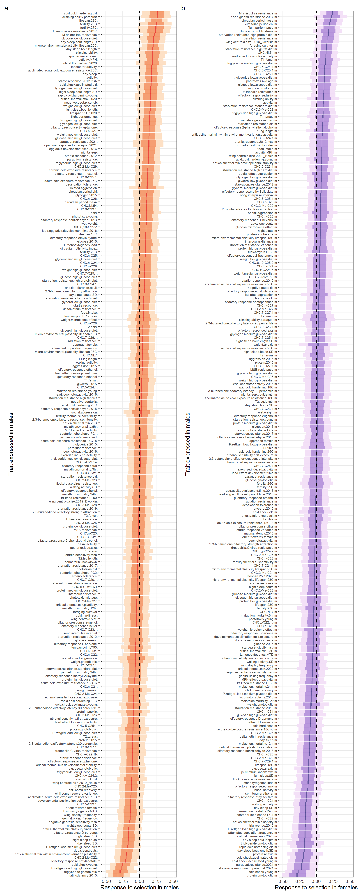
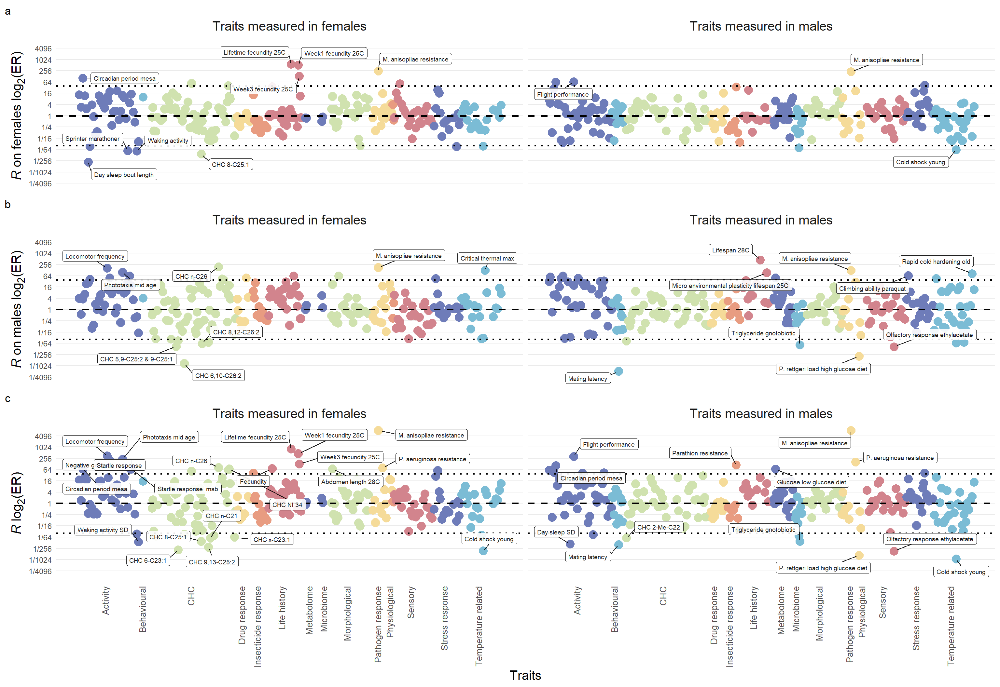

Intralocus sexual conflict in the DGRP
Thomas Keaney and Luke Holman
25/06/2021
Last updated: 2022-05-12
Checks: 7 0
Knit directory: DGRP_sexual_conflict/
This reproducible R Markdown analysis was created with workflowr (version 1.7.0). The Checks tab describes the reproducibility checks that were applied when the results were created. The Past versions tab lists the development history.
Great! Since the R Markdown file has been committed to the Git repository, you know the exact version of the code that produced these results.
Great job! The global environment was empty. Objects defined in the global environment can affect the analysis in your R Markdown file in unknown ways. For reproduciblity it’s best to always run the code in an empty environment.
The command set.seed(20210706) was run prior to running the code in the R Markdown file. Setting a seed ensures that any results that rely on randomness, e.g. subsampling or permutations, are reproducible.
Great job! Recording the operating system, R version, and package versions is critical for reproducibility.
Nice! There were no cached chunks for this analysis, so you can be confident that you successfully produced the results during this run.
Great job! Using relative paths to the files within your workflowr project makes it easier to run your code on other machines.
Great! You are using Git for version control. Tracking code development and connecting the code version to the results is critical for reproducibility.
The results in this page were generated with repository version 95f4a97. See the Past versions tab to see a history of the changes made to the R Markdown and HTML files.
Note that you need to be careful to ensure that all relevant files for the analysis have been committed to Git prior to generating the results (you can use wflow_publish or wflow_git_commit). workflowr only checks the R Markdown file, but you know if there are other scripts or data files that it depends on. Below is the status of the Git repository when the results were generated:
Ignored files:
Ignored: .DS_Store
Ignored: .Rhistory
Ignored: .Rproj.user/
Ignored: code/.DS_Store
Ignored: gwas_data/
Untracked files:
Untracked: -Toms-laptop.Rhistory
Untracked: Manuscript/
Untracked: Reported_heritability.xlsx
Untracked: Rplot.pdf
Untracked: S_plots.pdf
Untracked: Selection_differential_plot.pdf
Untracked: Selection_differentials.pdf
Untracked: Selection_differentials_f.pdf
Untracked: Selection_differentials_m.pdf
Untracked: analysis/Random_plots.R
Untracked: code/LICENSE
Untracked: code/gcta64
Untracked: code/prettify
Untracked: code/toy.map
Untracked: code/toy.ped
Untracked: data/SNP_heritability.csv
Untracked: data/SNP_heritability_cleaned.csv
Untracked: data/SNP_selection.csv
Untracked: data/S_female.csv
Untracked: data/rfm_dimorphism_model.rds
Untracked: dimorphism_subset.pdf
Untracked: fitness_variation.pdf
Untracked: fits/
Untracked: lifetime_fecundity_S.pdf
Untracked: mating_latency_S.pdf
Unstaged changes:
Modified: .Rprofile
Modified: .gitattributes
Modified: .gitignore
Modified: DGRP_sexual_conflict.Rproj
Modified: README.md
Modified: _workflowr.yml
Modified: analysis/SNP_correlations.Rmd
Modified: analysis/_site.yml
Modified: analysis/license.Rmd
Modified: analysis/process_mashr.Rmd
Modified: analysis/run_GWAS.Rmd
Modified: analysis/run_mashr.Rmd
Modified: code/README.md
Modified: code/run_mashr.R
Modified: data/README.md
Modified: data/S_male.csv
Modified: data/all.dgrp.phenos_unscaled.csv
Modified: data/rfm.complete.csv
Modified: output/README.md
Note that any generated files, e.g. HTML, png, CSS, etc., are not included in this status report because it is ok for generated content to have uncommitted changes.
These are the previous versions of the repository in which changes were made to the R Markdown (analysis/Main_analysis.Rmd) and HTML (docs/Main_analysis.html) files. If you’ve configured a remote Git repository (see ?wflow_git_remote), click on the hyperlinks in the table below to view the files as they were in that past version.
| File | Version | Author | Date | Message |
|---|---|---|---|---|
| Rmd | 95f4a97 | ausevo | 2022-05-12 | including ideas section |
| html | 7bf0ee0 | ausevo | 2022-05-10 | Build site. |
| Rmd | 5b9883e | ausevo | 2022-05-10 | Add GCTA model outputs |
| Rmd | 8e2d8be | tkeaney | 2021-08-17 | Merge branch ‘master’ of https://github.com/tomkeaney/DGRP_sexual_conflict |
| Rmd | 4b095f0 | tkeaney | 2021-08-17 | edits |
| Rmd | 73f011c | lukeholman | 2021-08-06 | Tiny edit (digits=3) |
| html | 043902f | tkeaney | 2021-07-28 | Build site. |
| Rmd | 959123f | tkeaney | 2021-07-28 | trying to fix a bug |
| html | 769e48d | tkeaney | 2021-07-28 | Build site. |
| Rmd | 340c41b | tkeaney | 2021-07-28 | sexual dimorphism calculation added |
| html | 4018580 | tkeaney | 2021-07-28 | Build site. |
| Rmd | 65b2597 | tkeaney | 2021-07-28 | sexual dimorphism calculation added |
| html | 83a0c4f | tkeaney | 2021-07-28 | Build site. |
| Rmd | ddea55e | tkeaney | 2021-07-28 | sexual dimorphism calculation added |
| html | b364d30 | tkeaney | 2021-07-23 | Build site. |
| Rmd | e404cf9 | tkeaney | 2021-07-23 | progression on selection calculations |
| html | 32f107f | tkeaney | 2021-07-23 | Build site. |
| Rmd | 6aad8a8 | tkeaney | 2021-07-23 | progression on selection calculations |
| html | 11a8390 | tkeaney | 2021-07-07 | Build site. |
| Rmd | 42b8f12 | tkeaney | 2021-07-07 | Get the site up and running |
Load packages and the data
First load the packages
library(tidyverse) # for tidy coding
library(googlesheets4) # for reading google sheets
library(pheatmap) # for heatmaps
library(RColorBrewer) # for custom colours
library(rcartocolor) # cool colours
library(wesanderson) # cool colours
library(kableExtra) # for scrolling tables
library(pander) # more tables
library(patchwork) # for cool plots
library(brms) # for bayesian models
library(tidybayes) # for more bayesian things
library(shiny) # for interactive app
library(DT) # for interactive tables
library(broom) # convert results of functions into tables
library(ggExtra) # for marginal plots
library(ggtips) # for hovering tooltips in R shiny
library(ggtext) # for markdown features in ggplot
library(job) # to run things in the background
# for plots later
pos_colour <- wes_palette("Zissou1")[4]
neg_colour <- wes_palette("Zissou1")[2]
fitness_regression_plot <- function(a, b, c) {
a %>% filter(Trait == b) %>%
ggplot(aes(trait_value, female_fitness)) +
geom_point(shape = 21, alpha = 0.75, size = 3, fill = c, show.legend = FALSE) +
geom_smooth(method = 'lm', color='black') +
geom_hline(yintercept = 0, linetype = 2) +
geom_vline(xintercept = 0, linetype = 2) +
#coord_cartesian(xlim = c(-3, 3), ylim = c(-3, 3)) +
theme_bw() +
theme(panel.border= element_blank(),
axis.line=element_line(),
text = element_text(size=14),
panel.grid.major.x = element_blank(),
panel.grid.major.y = element_blank(),
panel.grid.minor.y = element_blank(),
panel.grid.minor.x = element_blank(),
axis.title.x = element_text(size = 12),
axis.title.y = element_text(size = 12))
}Now load the data. Correlation analysis is not robust when sample sizes are small, so we only include traits that have been measured in 80+ lines.
DGRP_data <- read_csv("data/all.dgrp.phenos_unscaled.csv") %>%
filter(Reference != "Vonesch et al (2016) PLOS Genetics")
# Now trim the dataset so that it only includes traits that have been measured in 80+ lines - we are left with 955 traits from an original 1157
DGRP_subset <- DGRP_data %>%
group_by(Trait) %>%
filter(length(line) > 80) %>%
ungroup()
# Add a study ID variable
DGRP_subset <-
DGRP_subset %>%
group_by(Reference) %>%
mutate(study_ID = cur_group_id()) %>%
arrange(study_ID) %>%
ungroup()
# Assign each trait to a category based on whether it was measured in 1) both sexes separately, 2) just females, 3) just males or 4) both sexes together. We can use a shortcut and use the study names as each study tends to be consistent with their measurement approach (with 4 exceptions).
DGRP_subset <-
DGRP_subset %>%
mutate(rmf_applicable = if_else(Reference == "Arya et al (2015) Chemical Senses" | Reference == "Battlay et al (2018) G3" | Reference == "Brown et al (2013) Genes, Brain and Behaviour" | Reference == "Campwell et al (2019) G3" | Reference == "Carbone et al (2017) PNAS" | Reference == "Chohan (2012) PhD thesis" | Reference == "Dembeck et al (2015) eLife" | Reference == "Everett et al (2020) Genome Research" | Reference == "Everman and Morgan (2017) Evolution" | Reference == "Everman et al (2019) Genetics" | Reference == "Garlapow et al (2015) PLOS One" | Reference == "Gerken et al (2015) PNAS" | Reference == "Grubbs et al (2013) PLOS One" | Reference == "Harbison et al (2018) Behavior Genetics" | Reference == "Harbison, McCoy and Mackay (2013) BMC Genomics" | Reference == "Huang et al (2020) PLOS Biology" | Reference == "Jordan et al (2012) PLOS One" | Reference == "Lecheta et al (2020) Frontiers in Genetics" | Reference == "Lovejoy et al (2021) Molecular Ecology" | Reference == "Mackay et al (2012) Nature" | Reference == "Morgante et al (2015) Scientific Reports" | Reference == "Morozova el al. (2015) BMC Genomics" | Reference == "Palmer et al (2018) PLOS Pathogens" | Reference == "Rajpurohit et al (2018) Molecular Ecology" | Reference == "Riddle (2020) Journal of Experimental Biology" | Reference == "Spierer et al (2021) PLOS Genetics" | Reference == "Swarup et al (2013) PNAS" | Reference == "Wang, Lu and St. Leger (2017) PLOS Pathogens" | Reference == "Watanabe et al (2020) G3" | Reference == "Weber et al (2012) PLOS One" | Reference == "Wong and Holman (in prep)"| Reference == "Wu et al (2018) SLEEPJ" | Reference == "Zhou et al (2016) Environmental Health Perspectives", "YES", "NO"))
# Above, we identified the studies that measured traits in the sexes separately. However, some studies measure multiple traits, some of which they only measure in one sex or both (e.g. larval traits are often measured with the sexes pooled). Below we remove the specific traits that are not measured in both sexes separately from our already trimmed data
DGRP_rmf <-
DGRP_subset %>%
filter(rmf_applicable == "YES") %>%
filter(Trait != "anoxia.tolerance.larval",
Trait != "CHC.11 & 9-Me-C23.f",
Trait != "CHC.13- & 11-Me-C25.f",
Trait != "CHC.2-Me-C26.m",
Trait !="CHC.2-Me-C27.m",
Trait !="CHC.2-Me-C28 & 7,11-C29:2.f",
Trait != "CHC.2-Me-C28.m",
Trait != "CHC.2-Me-C29 & 8,12-C30:2.f",
Trait != "CHC.2-Me-C29.m",
Trait != "CHC.2-Me-C30.f",
Trait != "CHC.3-Me-C23.m",
Trait != "CHC.3-Me-C25 & 9-C26:1.f",
Trait != "CHC.3-Me-C25.m",
Trait != "CHC.3-Me-C27 & 6,10-C28:2 & 9-C28:1.f",
Trait != "CHC.5,9-C25:2 & 9-C25:1.f",
Trait != "CHC.5,9-C27:2 & 9-C27:1.f",
Trait != "CHC.5-C27:1.f",
Trait != "CHC.5-Me-C25.f",
Trait != "CHC.6,10-C26:2.f",
Trait != "CHC.6-C26:1 & i.m",
Trait != "CHC.7,11-C23:2.f",
Trait != "CHC.7,11-C24:2.f",
Trait != "CHC.7,11-C25:2.f",
Trait != "CHC.7,11-C26:2.f",
Trait != "CHC.7,11-C27:2 & 2-Me-C26.f",
Trait != "CHC.7,11-C28:2 & 2-Me-C27.f",
Trait != "CHC.7,11-C31:2.f",
Trait != "CHC.7-C24:1.m",
Trait != "CHC.8,12-C26:2.f",
Trait != "CHC.8,12-C28:2.f",
Trait != "CHC.8-C25:1.f",
Trait != "CHC.9,13-C25:2.f",
Trait != "CHC.9,13-C27:2.f",
Trait != "CHC.9-C25:1.m",
Trait != "CHC.9-C27:1.m",
Trait != "CHC.9-C29:1 & 5,9-C29:2.f",
Trait != "CHC.n-C25.m",
Trait != "CHC.NI.20.f",
Trait != "CHC.NI.33.f",
Trait != "CHC.NI.34.f",
Trait != "CHC.NI.7.m",
Trait != "CHC.x-C22:1a.m",
Trait != "CHC.x-C22:1b.m",
Trait != "CHC.x-C23:1.f",
Trait != "kallithea.viral.load.f",
Trait != "dopamine.content.2021.m",
Trait != "dopamine.content.paraquat.2021.m",
Trait != "dopamine.response.to.paraquat.2021.m")
# Make a female trait dataset
DGRP_rf_unscaled <-
DGRP_rmf %>% filter(Sex == "Female") %>%
rename(Female_trait_value = trait_value) %>%
select(-c(Sex, `Trait description`, study_ID, rmf_applicable)) %>%
mutate(Trait = gsub('.{2}$', '', Trait)) # remove the final two characters from the name of each trait: .f
DGRP_rf <-
DGRP_rf_unscaled %>%
group_by(Trait) %>% # group the data by trait so that scaling works on a per trait basis
mutate(Female_trait_value = as.numeric(scale(Female_trait_value))) %>% # scale the data for each trait
ungroup()
# Make a male trait dataset
DGRP_rm_unscaled <-
DGRP_rmf %>% filter(Sex == "Male") %>%
rename(Male_trait_value = trait_value) %>%
select(-c(Sex, `Trait description`, study_ID, rmf_applicable)) %>%
mutate(Trait = gsub('.{2}$', '', Trait)) # remove the final two characters from the name of each trait: .m
DGRP_rm <-
DGRP_rm_unscaled %>%
group_by(Trait) %>% # group the data by trait so that scaling works on a per trait basis
mutate(Male_trait_value = as.numeric(scale(Male_trait_value))) %>% # scale the data for each trait
ungroup()
# Join the two together
rfm_unscaled_data <- full_join(DGRP_rf_unscaled, DGRP_rm_unscaled)
rfm_data <- full_join(DGRP_rf, DGRP_rm)
# Now return to our larger tibble: DGRP_subset. Do some wrangling and scale it. Scaling is also applied to each trait value, so that each trait has a mean of 0 and an SD of 1. This makes the variation found for each trait broadly comparable with all other traits.
s_data <-
DGRP_subset %>% filter(Trait != "fitness.early.f" &
Trait != "fitness.early.m")
s_data_1 <-
DGRP_subset %>% filter(Trait == "fitness.early.f") %>%
rename(female_fitness = trait_value) %>%
select(line, female_fitness)
s_data_2 <-
DGRP_subset %>% filter(Trait == "fitness.early.m") %>%
rename(male_fitness = trait_value) %>%
select(line, male_fitness)
s_data <-
left_join(s_data, s_data_1)
s_data <-
left_join(s_data, s_data_2) %>%
group_by(Trait) %>% # group the data by trait so that scaling works on a per trait basis
mutate(trait_value = as.numeric(scale(trait_value))) # scale the data for each trait\(~\)
Sexual dimorphism and the intersex genetic correlation
\(~\)
Calculating rAz fm for all traits
\(~\)
The traits we consider in this analysis fall into four categories. 1) They have been measured in the two sexes separately, 2) they have only been measured females, 3) they have only been measured in males and 4) they have been measured across the two sexes. For those traits that fall into category 1, we can calculate rAfm.
We use bayesian models to find the residual correlation between traits expressed in males and females. Each line represents a different genotype, and we have measures for both sexes per line. This correlation therefore corresponds to the additive intersex genetic correlation for each trait.
A problem here is that my current approach assumes that each trait is normally distributed, which is clearly false. This is the same problem that researchers face with the spearman correlation coefficient, and the main reason we have used the pearson method in earlier analyses. To solve this problem, I can categorise each trait into a ‘distribution family’ then run the models in subsets. Using this bayesian approach is preferred because it gives us measures of uncertainty which you don’t get from the pearson frequentist approach. Currently not done
# find all the traits in our dataset
check <- unique(rfm_data$Trait)
# this is our model outline - we can update this with new filtered data to calculate rfm for every trait. We do this because we don't want brms to recompile every time. With the model already compiled we can simply update, which saves a load of time.
rfm_model <-
brm(data = rfm_data %>% filter(Trait == "flight.performance"),
family = gaussian,
bf(mvbind(Female_trait_value, Male_trait_value) ~ 0, sigma ~ 0) + set_rescor(TRUE),
prior(lkj(2), class = rescor),
chains = 4, cores = 4,
seed = 1)
# sample from the posterior - this will create a tibble with two columns - Trait and rfm
post <- posterior_samples(rfm_model) %>%
rename(rfm = rescor__Femaletraitvalue__Maletraitvalue) %>%
mutate(Trait = "flight.performance") %>%
select(Trait, rfm) %>%
as_tibble()
# make a function to update the model and the posterior sample output with your desired trait
rfm_calculator <- function(selected_trait){
data <- rfm_data %>% filter(Trait == selected_trait)
model <- update(
rfm_model, newdata = data,
chains = 4, cores = 4,
seed = 1)
post <-
posterior_samples(model) %>%
rename(rfm = rescor__Femaletraitvalue__Maletraitvalue) %>%
mutate(Trait = selected_trait,
`Trait guild` = unique(data$`Trait guild`)) %>%
select(Trait, rfm, `Trait guild`) %>%
as_tibble()
post
}
# create a list of all trait to iterate our function over
trait_list <- unique(rfm_data$Trait)
#trait_list_test_subset <- rfm_data %>% filter(`Trait guild` == "Insecticide response")
#trait_list_test_subset <- unique(trait_list_test_subset$Trait)
#rfm_test <- map_dfr(trait_list_test_subset, rfm_calculator)
# run the function
if(!file.exists("data/rfm.complete.csv")){
rfm_complete <- map_dfr(trait_list, rfm_calculator) # map_dfr returns a data frame created by row-binding each output
write_csv(rfm_complete, file = "data/rfm.complete.csv")
} else rfm_complete <- read_csv("data/rfm.complete.csv")
# now plot rfm for all traits
rfm_forest_plot <-
rfm_complete %>%
filter(`Trait guild` != "CHC") %>%
filter(`Trait guild` != "Microbiome") %>%
group_by(Trait) %>%
mutate(avg_rfm = median(rfm)) %>%
ggplot(aes(rfm, fct_reorder(Trait, avg_rfm))) +
stat_interval(.width = c(0.05, 0.66, 0.95),
height = 3, show.legend = F) +
rcartocolor::scale_color_carto_d(palette = "Peach") +
#stat_pointinterval(aes(), .width = c(0.66, 0.95)) +
geom_vline(linetype = 2, xintercept = 0) +
coord_cartesian(xlim = c(-0.1, 1)) +
ylab("Trait") +
xlab("Estimated intersex genetic correlation (_r^fm_ )") +
theme_bw() +
theme(legend.position = "none",
panel.grid.minor = element_blank(),
axis.title.x = ggtext::element_markdown())
rfm_microbiome_forest_plot <-
rfm_complete %>%
filter(`Trait guild` == "Microbiome") %>%
group_by(Trait) %>%
mutate(avg_rfm = median(rfm)) %>%
ggplot(aes(rfm, fct_reorder(Trait, avg_rfm))) +
stat_interval(.width = c(0.05, 0.66, 0.95),
height = 3, show.legend = F) +
rcartocolor::scale_color_carto_d(palette = "Peach") +
#stat_pointinterval(aes(), .width = c(0.66, 0.95)) +
geom_vline(linetype = 2, xintercept = 0) +
coord_cartesian(xlim = c(-0.2, 1)) +
ylab("Microbiome trait") +
xlab("Estimated intersex genetic correlation (_r^fm_ )") +
theme_bw() +
theme(legend.position = "none",
panel.grid.minor = element_blank(),
axis.title.x = ggtext::element_markdown())
rfm_CHC_forest_plot <-
rfm_complete %>%
filter(`Trait guild` == "CHC") %>%
mutate(Trait = str_remove(Trait, "CHC.")) %>%
group_by(Trait) %>%
mutate(avg_rfm = median(rfm)) %>%
ggplot(aes(rfm, fct_reorder(Trait, avg_rfm))) +
stat_interval(.width = c(0.05, 0.66, 0.95),
height = 3, show.legend = F) +
rcartocolor::scale_color_carto_d(palette = "Peach") +
#stat_pointinterval(aes(), .width = c(0.66, 0.95)) +
geom_vline(linetype = 2, xintercept = 0) +
coord_cartesian(xlim = c(-0.5, 1)) +
ylab("CHC") +
xlab("Estimated intersex genetic correlation (_r^fm_ )") +
theme_bw() +
theme(legend.position = "none",
panel.grid.minor = element_blank(),
axis.title.x = ggtext::element_markdown())
rfm_forest_plot + rfm_microbiome_forest_plot + rfm_CHC_forest_plot
Figure 1: The intersex additive genetic correlation for traits that have been measured in both sexes in > 80 DGRP lines. A value of 0 indicates that there is no intersex genetic correlation, while a value of 1 means that additive genetic effects in one sex affect the other one identically. Data are means (depicted as 5% uncertainty intervals) with 66% and 95% uncertainty intervals.
\(~\)
Calculating sexual dimorphism for all traits
\(~\)
Sexual dimorphism is a distinct concept from the intersex genetic correlation. The intersex genetic correlation is the correlation between the effects of alleles on females and males. When this is high, the sexes are affected by alleles in a similar way. However, a high \(r_{fm}\) does not necessarily main that there is not sexual dimorphism, which is the difference in the trait mean between females and males. If processes other than genetic variation affect phenotype, then sexual dimorphism can be decoupled from \(r_{fm}\). For example, suppose an allele affects a trait expressed by both sexes in the same direction, but that it is expressed to different extents in the two sexes. This will result in a positive genetic correlation, but a sexually dimorphic trait.
Recall that we calculated \(r_{fm}\) as the residual correlation between trait means for each line that had been scaled within their sex groupings. To calculate sexual dimorphism, we instead scale trait means across both sexes. This means that a male that has a high trait value relative to other males can still have a low trait value if females have higher trait values on average.
We fit the model Trait_value ~ 1 + (Sex|Trait) to estimate the effect of sex on trait means.Specifically, use the \(\beta\) estimate for the effect of Sex:Male on the mean for each trait to estimate sexual dimorphism.
d1 <-
rfm_unscaled_data %>%
select(-Male_trait_value) %>%
mutate(Sex = "Female") %>%
rename(Trait_value = Female_trait_value)
d2 <-
rfm_unscaled_data %>%
select(-Female_trait_value) %>%
mutate(Sex = "Male") %>%
rename(Trait_value = Male_trait_value)
dimorphism_data <- rbind(d1, d2) %>%
group_by(Trait) %>% # group the data by trait so that scaling works on a per trait basis
mutate(Trait_value = as.numeric(scale(Trait_value))) %>% # scale the data for each trait
ungroup()
# now we model dimorphism score to find an average value for each trait
#job::job({
dimorphism_model <-
brm(data = dimorphism_data,
family = gaussian,
Trait_value ~ 1 + (Sex|Trait),
prior = c(prior(normal(0, 5), class = Intercept),
prior(cauchy(0, 2), class = sd)),
chains = 4, cores = 4, warmup = 3000, iter = 8000,
seed = 1, file = "fits/dimorphism_model")
#})
# Now find the difference between males and females for each trait. This is calculated in the model as the trait specific effect of being male. We can find posterior estimates for these parameters using posterior samples(). Each trait has a column of estimated values named r_Trait[**insert specified trait**,SexMale]. We wrangle the data so that we get two columns: one with the trait name and another with an estimated value sampled from the posterior distribution for that parameter.
# Interpreting the dimorphism values: positive values indicate that males have higher trait values than females, a value of 0 indicates that there is no sexual dimorphism, and negative values indicate that females have higher trait values
dimorphism_post <- posterior_samples(dimorphism_model) %>%
as_tibble() %>%
select(starts_with("r_Trait") &
contains("SexMale")) %>%
pivot_longer(cols = everything(), names_to = "Trait", values_to = "dimorphism_value") %>%
mutate(Trait = str_remove(Trait, "r_Trait"),
Trait = str_remove(Trait, ",SexMale"),
Trait = gsub("\\[|\\]", "", Trait)) %>%
arrange(Trait)
# Now add the guild data to our tibble
d3 <- dimorphism_data %>% select(Trait, `Trait guild`) %>%
distinct(Trait, `Trait guild`)
dimorphism_post <-
left_join(dimorphism_post, d3)
# plot dimorphism for all traits
forest_plot_dimorphism <-
dimorphism_post %>%
filter(`Trait guild` != "CHC") %>%
filter(`Trait guild` != "Microbiome") %>%
group_by(Trait) %>%
mutate(avg_dimorph = median(dimorphism_value)) %>%
ggplot(aes(dimorphism_value, fct_reorder(Trait, avg_dimorph))) +
stat_interval(.width = c(0.05, 0.66, 0.95),
height = 3, show.legend = F) +
rcartocolor::scale_color_carto_d(palette = "Peach") +
geom_vline(linetype = 2, xintercept = 0) +
coord_cartesian(xlim = c(-2, 2)) +
ylab("Trait") +
xlab("Estimated sexual dimorphism") +
theme_bw() +
theme(legend.position = "none",
panel.grid.minor = element_blank(),
axis.title.x = ggtext::element_markdown())
forest_plot_microbiome_dimorphism <-
dimorphism_post %>%
filter(`Trait guild` == "Microbiome") %>%
group_by(Trait) %>%
mutate(avg_dimorph = median(dimorphism_value)) %>%
ggplot(aes(dimorphism_value, fct_reorder(Trait, avg_dimorph))) +
stat_interval(.width = c(0.05, 0.66, 0.95),
height = 3, show.legend = F) +
rcartocolor::scale_color_carto_d(palette = "Peach") +
#stat_pointinterval(aes(), .width = c(0.66, 0.95)) +
geom_vline(linetype = 2, xintercept = 0) +
coord_cartesian(xlim = c(-2, 2)) +
ylab("Microbiome trait") +
xlab("Estimated sexual dimorphism") +
theme_bw() +
theme(legend.position = "none",
panel.grid.minor = element_blank(),
axis.title.x = ggtext::element_markdown())
forest_plot_CHC_dimorphism <-
dimorphism_post %>%
filter(`Trait guild` == "CHC") %>%
mutate(Trait = str_remove(Trait, "CHC.")) %>%
group_by(Trait) %>%
mutate(avg_dimorph = median(dimorphism_value)) %>%
ggplot(aes(dimorphism_value, fct_reorder(Trait, avg_dimorph))) +
stat_interval(.width = c(0.05, 0.66, 0.95),
height = 3, show.legend = F) +
rcartocolor::scale_color_carto_d(palette = "Peach") +
#stat_pointinterval(aes(), .width = c(0.66, 0.95)) +
geom_vline(linetype = 2, xintercept = 0) +
coord_cartesian(xlim = c(-2, 2)) +
ylab("CHC") +
xlab("Estimated sexual dimorphism") +
theme_bw() +
theme(legend.position = "none",
panel.grid.minor = element_blank(),
axis.title.x = ggtext::element_markdown())
forest_plot_dimorphism + forest_plot_microbiome_dimorphism + forest_plot_CHC_dimorphism
Figure 2: Sexual dimorphism scores for traits that have been phenotyped in females and males. Positive values indicate that males have higher trait values than females, a value of 0 indicates that there is no sexual dimorphism, and negative values indicate that females have higher trait values than males. Bars represent means (displayed as 5% CI intervals), 66% and 95% intervals.
\(~\)
What effect does the intersex genetic correlation have on sexual dimorphism?
\(~\)
To answer this question, we take the absolute value of our dimorphism measure. While this means we are unable to identify which sex has the higher trait value, it allows us to test whether there is a negative relationship between \(r_{fm}\) and sexual dimorphism, as predicted if \(r_{fm}\) holds the sexes back from attaining their phenotypic optima.
abs_dimorphism_summary <-
dimorphism_post %>%
group_by(Trait) %>%
mean_qi(dimorphism_value) %>%
rename(dimorphism_lower = .lower,
dimorphism_upper = .upper) %>%
select(Trait, dimorphism_value, dimorphism_lower, dimorphism_upper) %>%
mutate(dimorphism_direction = if_else(dimorphism_value > 0, "Male", "Female"),
dimorphism_value = abs(dimorphism_value),
dimorphism_lower = abs(dimorphism_lower),
dimorphism_upper = abs(dimorphism_upper))
rfm_summary <-
rfm_complete %>%
group_by(Trait) %>%
mean_qi(rfm) %>%
rename(rfm_lower = .lower,
rfm_upper = .upper) %>%
select(Trait, rfm, rfm_lower, rfm_upper)
rfm_dimorphism <-
left_join(rfm_summary, abs_dimorphism_summary)
rfm_dimorphism <-
full_join(rfm_dimorphism, d3)
rfm_dimorphism_plot <-
rfm_dimorphism %>%
ggplot(aes(x = rfm, y = dimorphism_value)) +
#geom_hex(bins = 20) +
#scale_fill_carto_c(palette = "Temps") +
geom_point(aes(fill = pos_colour), shape = 21, alpha = 0.75, size = 4, show.legend = FALSE) +
geom_smooth(method = 'lm', color='black') +
labs(x = "Intersex genetic correlation", y = "Sexual dimorphism (standard deviations)") +
theme_bw() +
theme(panel.border= element_blank(),
axis.line=element_line(),
text = element_text(size=14),
panel.grid.major.x = element_blank(),
panel.grid.major.y = element_blank(),
panel.grid.minor.y = element_blank(),
panel.grid.minor.x = element_blank(),
axis.title.x = element_text(size = 12),
axis.title.y = element_text(size = 12))
rfm_dimorphism_plot_guilds <-
rfm_dimorphism %>%
filter(`Trait guild` != "Pathogen response" &
`Trait guild` != "Reproduction" &
`Trait guild` != "Stress response" &
`Trait guild` != "Drug response" &
`Trait guild` != "Insecticide response" &
`Trait guild` != "Morphological" &
`Trait guild` != "Oxidative stress resistance") %>%
ggplot(aes(x = rfm, y = dimorphism_value)) +
#geom_hex(bins = 20) +
#scale_fill_carto_c(palette = "Temps") +
geom_point(aes(fill = pos_colour), shape = 21, alpha = 0.75, size = 4, show.legend = FALSE) +
geom_smooth(method = 'lm', color='black') +
labs(x = "Intersex genetic correlation", y = "Sexual dimorphism (standard deviations)") +
theme_bw() +
facet_wrap(~`Trait guild`) +
theme(panel.border= element_blank(),
axis.line=element_line(),
text = element_text(size=14),
panel.grid.major.x = element_blank(),
panel.grid.major.y = element_blank(),
panel.grid.minor.y = element_blank(),
panel.grid.minor.x = element_blank(),
axis.title.x = element_text(size = 12),
axis.title.y = element_text(size = 12))
rfm_dimorphism_plot /
rfm_dimorphism_plot_guilds
# the distribution family is not ideal. Ask Luke.
rfm_dimorphism_model <-
brm(dimorphism_value ~ 1 + rfm,
data = rfm_dimorphism, family = skew_normal(),
prior = c(prior(normal(0, 5), class = Intercept),
prior(normal(0, 2), class = b)),
warmup = 2000, iter = 6000, chains = 4, cores = 4, seed = 1,
file = "data/rfm_dimorphism_model")
#pp_check(rfm_dimorphism_model)Figure 3: The intersex genetic correlation for a trait does not affect sexual dimorphism in the trait. Panel a shows the entire dataset, while panels b-g show traits broken down into broad guilds. Note that guilds with less than 10 traits are not shown.
\(~\)
This analysis is not perfect! However, there does not appear to be any substantial effect of the intersex genetic correlation on sexual dimorphism This suggests that sharing a genome may not be the constraint on adaptation that is often assumed (at least in the DGRP).
\(~\)
Selection differentials and the opportunity for selection
\(~\)
There is variance in fitness for both sexes
# Calculate female selection differentials - identify all traits that don't end in .m
Female_selection_data <-
s_data %>%
filter(!str_ends(Trait, ".m"))
Female_fitness <-
Female_selection_data %>% filter(Trait == "fitness.late.f") %>%
ggplot(aes(x = female_fitness)) +
geom_bar(fill = "#f17854") +
scale_x_binned(breaks = c(-5, -4, -3, -2, -1, 0, 1, 2)) +
theme_minimal() +
labs(x = "Female fitness (standardised)",
y = "No. lines")
# Calculate male selection differentials - identify all traits that don't end in .f
Male_selection_data <-
s_data %>%
filter(!str_ends(Trait, ".f"))
Male_fitness <-
Male_selection_data %>% filter(Trait == "fitness.late.m") %>%
ggplot(aes(x = male_fitness)) +
geom_bar(fill = "#f17854") +
scale_x_binned(breaks = c(-5, -4, -3, -2, -1, 0, 1, 2, 3)) +
theme_minimal() +
labs(x = "Male fitness (standardised)",
y = NULL)
Female_fitness + Male_fitness
Figure XX: variation in fitness for a) females and b) males.
\(~\)
Calculating I: the opportunity for selection
\(~\)
We run into the problem that fitness has been standardised, meaning that variance is uniform and known i.e. SD = 1. I think we need raw values?
I is the variance in relative fitness within a population, and represents the upper bound for a change in any trait due to selection within a generation. The usefulness of I for working out how selection changes trait values depends upon the correlation of the trait in question with relative fitness. The stronger this correlation, the more insightful I becomes. This correlation is the Price-Robertson identity, \(S = \sigma(z, w)\), which we shall consider later.
Here we calculate I to set a bound for the maximum intensity of selection that is possible in our population, within the environmental conditions that our fitness measurements occurred. I is estimated by \[\hat{I} =\frac{n}{n-1}(\overline{w}^{2} - 1)\] where n is the number of individuals that we have measured fitness for (in our case lines), and \(\overline{w}^{2}\) is the mean of the squared relative fitness in the population. To calculate relative fitness we need to know the mean proportion of offspring produced across lines (our measure of fitness), then divide each lines individual fitness measure by this number. This will not work for scaled data. Ask Luke for unscaled means
No work on this yet
\(~\)
Calculating S: the selection differential
\(~\)
The selection differential is the change in trait mean that occurs within a generation. Positive values indicate positive directional selection, while negative values indicate negative directional selection. We can calculate the selection differential associated with each phenotype using the Robertson Price identity, which states that the selection differential is equivalent to the covariance between phenotype and relative fitness
\(S = \sigma(w_i, z_i)\)
or
\(S = cov(relative.fitness, standarised.phenotype)\)
To do this, I use bayesian analysis, so that we get uncertainty estimates on the selection differentials. We have standardised each trait to have mean = 0 and SD = 1. Therefore, if \(S\) = 0.25, this can be interpreted as a change of 0.25 standard deviations in the mean within a generation. However, this does not represent a change in the mean across generations because \(S\) provides no information about the inheritance of the trait.
We can also calculate the broad sense heritability associated with each phenotype… if we could calculate the narrow sense heritability we could use the Breeder’s equation, \(\Delta Z = h^2S\), to calculate the response to selection for each phenotype (I don’t think we can do this).
\(~\)
female_selection_model <-
brm(data = Female_selection_data %>% filter(Trait == "flight.performance.f"),
family = gaussian,
bf(mvbind(female_fitness, trait_value) ~ 0, sigma ~ 0) + set_rescor(TRUE),
prior(lkj(2), class = rescor),
chains = 4, cores = 4,
seed = 1)
# sample from the posterior - this will create a tibble with two columns - Trait and rfm
post <- posterior_samples(female_selection_model) %>%
rename(S_female = rescor__femalefitness__traitvalue) %>%
mutate(Trait = "flight.performance") %>%
select(Trait, S_female) %>%
as_tibble()
# make a function to update the model and the posterior sample output with your desired trait
S_female_calculator <- function(selected_trait){
data <- Female_selection_data %>% filter(Trait == selected_trait)
model <- update(
female_selection_model, newdata = data,
chains = 4, cores = 4,
seed = 1)
post <-
posterior_samples(model) %>%
rename(S_female = rescor__femalefitness__traitvalue) %>%
mutate(Trait = selected_trait,
`Trait guild` = unique(data$`Trait guild`)) %>%
select(Trait, S_female, `Trait guild`) %>%
as_tibble()
post
}
trait_list_female <- unique(Female_selection_data$Trait)
#trait_list_test_subset <- Female_selection_data %>% filter(`Trait guild` == "Stress response")
#trait_list_test_subset <- unique(trait_list_test_subset$Trait)
#S_f_test <- map_dfr(trait_list_test_subset, S_female_calculator)
# run the function
if(!file.exists("data/S_female.csv")){
S_female <- map_dfr(trait_list_female, S_female_calculator) # map_dfr returns a data frame created by row-binding each output
write_csv(S_female, file = "data/S_female.csv")
} else S_female <- read_csv("data/S_female.csv")
# now plot S_female for all traits
S_female_forest_plot <-
S_female %>%
filter(`Trait guild` != "Microbiome" &
`Trait guild` != "CHC" &
`Trait guild` != "Metabolome") %>%
group_by(Trait) %>%
mutate(avg_S = median(S_female)) %>%
ggplot(aes(S_female, fct_reorder(Trait, avg_S))) +
stat_interval(.width = c(0.05, 0.66, 0.95),
height = 3, show.legend = F) +
rcartocolor::scale_color_carto_d(palette = "Peach") +
geom_vline(linetype = 2, xintercept = 0) +
coord_cartesian(xlim = c(-0.5, 1)) +
ylab("Trait") +
xlab("Estimated female selection differential") +
theme_bw() +
theme(legend.position = "none",
panel.grid.minor = element_blank(),
axis.title.x = ggtext::element_markdown())
# microbiome traits only
S_female_microbiome_plot <-
S_female %>%
filter(`Trait guild` == "Microbiome") %>%
group_by(Trait) %>%
mutate(avg_S = median(S_female)) %>%
ggplot(aes(S_female, fct_reorder(Trait, avg_S))) +
stat_interval(.width = c(0.05, 0.66, 0.95),
height = 3, show.legend = F) +
rcartocolor::scale_color_carto_d(palette = "Peach") +
geom_vline(linetype = 2, xintercept = 0) +
coord_cartesian(xlim = c(-0.5, 1)) +
ylab("Microbiome trait") +
xlab("Estimated female selection differential") +
theme_bw() +
theme(legend.position = "none",
panel.grid.minor = element_blank(),
axis.title.x = ggtext::element_markdown())
# CHCs
S_female_CHC_plot <-
S_female %>%
filter(`Trait guild` == "CHC") %>%
mutate(Trait = str_remove(Trait, "CHC.")) %>%
group_by(Trait) %>%
mutate(avg_S = median(S_female)) %>%
ggplot(aes(S_female, fct_reorder(Trait, avg_S))) +
stat_interval(.width = c(0.05, 0.66, 0.95),
height = 3, show.legend = F) +
rcartocolor::scale_color_carto_d(palette = "Peach") +
geom_vline(linetype = 2, xintercept = 0) +
coord_cartesian(xlim = c(-0.5, 1)) +
ylab("CHC abundance") +
xlab("Estimated female selection differential") +
theme_bw() +
theme(legend.position = "none",
panel.grid.minor = element_blank(),
axis.title.x = ggtext::element_markdown())
# Metabolome
S_female_metabolome_plot <-
S_female %>%
filter(`Trait guild` == "Metabolome") %>%
group_by(Trait) %>%
mutate(avg_S = median(S_female)) %>%
ggplot(aes(S_female, fct_reorder(Trait, avg_S))) +
stat_interval(.width = c(0.05, 0.66, 0.95),
height = 3, show.legend = F) +
rcartocolor::scale_color_carto_d(palette = "Peach") +
geom_vline(linetype = 2, xintercept = 0) +
coord_cartesian(xlim = c(-0.5, 1)) +
ylab("Metabolome (abundance)") +
xlab("Estimated female selection differential") +
theme_bw() +
theme(legend.position = "none",
panel.grid.minor = element_blank(),
axis.title.x = ggtext::element_markdown())
(S_female_forest_plot | S_female_microbiome_plot) /
(S_female_CHC_plot | S_female_metabolome_plot)
Figure XX: selection differentials for traits expressed in females
male_selection_model <-
brm(data = Male_selection_data %>% filter(Trait == "flight.performance.m"),
family = gaussian,
bf(mvbind(male_fitness, trait_value) ~ 0, sigma ~ 0) + set_rescor(TRUE),
prior(lkj(2), class = rescor),
chains = 4, cores = 4,
seed = 1)
# sample from the posterior - this will create a tibble with two columns - Trait and rfm
post <- posterior_samples(male_selection_model) %>%
rename(S_male = rescor__malefitness__traitvalue) %>%
mutate(Trait = "flight.performance") %>%
select(Trait, S_male) %>%
as_tibble()
# make a function to update the model and the posterior sample output with your desired trait
S_male_calculator <- function(selected_trait){
data <- Male_selection_data %>% filter(Trait == selected_trait)
model <- update(
male_selection_model, newdata = data,
chains = 4, cores = 4,
seed = 1)
post <-
posterior_samples(model) %>%
rename(S_male = rescor__malefitness__traitvalue) %>%
mutate(Trait = selected_trait,
`Trait guild` = unique(data$`Trait guild`)) %>%
select(Trait, S_male, `Trait guild`) %>%
as_tibble()
post
}
trait_list_male <- unique(Male_selection_data$Trait)
# run the function
if(!file.exists("data/S_male.csv")){
S_male <- map_dfr(trait_list_male, S_male_calculator) # map_dfr returns a data frame created by row-binding each output
write_csv(S_male, file = "data/S_male.csv")
} else S_male <- read_csv("data/S_male.csv")
# now plot S_male for all traits
S_male_forest_plot <-
S_male %>%
filter(`Trait guild` != "Microbiome" &
`Trait guild` != "CHC" &
`Trait guild` != "Metabolome" ) %>%
group_by(Trait) %>%
mutate(avg_S = median(S_male)) %>%
ggplot(aes(S_male, fct_reorder(Trait, avg_S))) +
stat_interval(.width = c(0.05, 0.66, 0.95),
height = 3, show.legend = F) +
rcartocolor::scale_color_carto_d(palette = "Peach") +
geom_vline(linetype = 2, xintercept = 0) +
coord_cartesian(xlim = c(-0.5, 1)) +
ylab("Trait") +
xlab("Estimated male selection differential") +
theme_bw() +
theme(legend.position = "none",
panel.grid.minor = element_blank(),
axis.title.x = ggtext::element_markdown())
# microbiome traits only
S_male_microbiome_plot <-
S_male %>%
filter(`Trait guild` == "Microbiome") %>%
group_by(Trait) %>%
mutate(avg_S = median(S_male)) %>%
ggplot(aes(S_male, fct_reorder(Trait, avg_S))) +
stat_interval(.width = c(0.05, 0.66, 0.95),
height = 3, show.legend = F) +
rcartocolor::scale_color_carto_d(palette = "Peach") +
geom_vline(linetype = 2, xintercept = 0) +
coord_cartesian(xlim = c(-0.5, 1)) +
ylab("Microbiome trait") +
xlab("Estimated male selection differential") +
theme_bw() +
theme(legend.position = "none",
panel.grid.minor = element_blank(),
axis.title.x = ggtext::element_markdown())
# CHCs
S_male_CHC_plot <-
S_male %>%
filter(`Trait guild` == "CHC") %>%
mutate(Trait = str_remove(Trait, "CHC.")) %>%
group_by(Trait) %>%
mutate(avg_S = median(S_male)) %>%
ggplot(aes(S_male, fct_reorder(Trait, avg_S))) +
stat_interval(.width = c(0.05, 0.66, 0.95),
height = 3, show.legend = F) +
rcartocolor::scale_color_carto_d(palette = "Peach") +
geom_vline(linetype = 2, xintercept = 0) +
coord_cartesian(xlim = c(-0.5, 1)) +
ylab("CHC abundance") +
xlab("Estimated male selection differential") +
theme_bw() +
theme(legend.position = "none",
panel.grid.minor = element_blank(),
axis.title.x = ggtext::element_markdown())
# Metabolome
S_male_metabolome_plot <-
S_male %>%
filter(`Trait guild` == "Metabolome") %>%
group_by(Trait) %>%
mutate(avg_S = median(S_male)) %>%
ggplot(aes(S_male, fct_reorder(Trait, avg_S))) +
stat_interval(.width = c(0.05, 0.66, 0.95),
height = 3, show.legend = F) +
rcartocolor::scale_color_carto_d(palette = "Peach") +
geom_vline(linetype = 2, xintercept = 0) +
coord_cartesian(xlim = c(-0.5, 1)) +
ylab("Metabolome (abundance)") +
xlab("Estimated male selection differential") +
theme_bw() +
theme(legend.position = "none",
panel.grid.minor = element_blank(),
axis.title.x = ggtext::element_markdown())
(S_male_forest_plot | S_male_microbiome_plot) /
(S_male_CHC_plot | S_male_metabolome_plot)
\(~\)
Top 10 / bottom 10 traits under selection in females
# Now let's plot the trait correlations that are most positively correlated
female.1 <-
fitness_regression_plot(Female_selection_data, "glutamic.acid.low.yeast.f", pos_colour) +
labs(x = "Level of glutamic\nacid on low yeast\ndiet", y = "Female fitness") +
annotate("text", label = "S = 0.27 (0.1-0.42)", x = 2, y = -3, size = 4, colour = "black")
female.2 <-
fitness_regression_plot(Female_selection_data, "lifetime.fecundity.25C.f", pos_colour) +
labs(x = "Lifetime fecundity at 25C", y = NULL) +
annotate("text", label = "S = 0.28 (0.1-0.44)", x = 2, y = -2, size = 4, colour = "black")
female.3 <-
fitness_regression_plot(Female_selection_data, "week1.fecundity.25C.f", pos_colour) +
labs(x = "Week 1 fecundity\n at 25C", y = NULL) +
annotate("text", label = "S = 0.27 (0.09-0.43)", x = 1.75, y = -2, size = 4, colour = "black")
female.4 <-
fitness_regression_plot(Female_selection_data, "M.anisopliae.resistance.f", pos_colour) +
labs(x = "Resistance to\nM. anisopliae", y = NULL) +
annotate("text", label = "S = 0.24 (0.07-0.39)", x = 2, y = -4, size = 4, colour = "black")
female.5 <-
fitness_regression_plot(Female_selection_data, "serine.high.yeast.f", pos_colour) +
labs(x = "Level of serine\n on high yeast diet", y = NULL) +
annotate("text", label = "S = 0.25 (0.06-0.41)", x = 1.75, y = -3, size = 4, colour = "black")
female.6 <-
fitness_regression_plot(Female_selection_data, "circadian.period.mesa.f", pos_colour) +
labs(x = "Circadian period length", y = "Female fitness") +
coord_cartesian(xlim = c(-3, 3)) +
annotate("text", label = "S = 0.28 (0.05-0.47)", x = 2, y = -3, size = 4, colour = "black")
female.7 <-
fitness_regression_plot(Female_selection_data, "ornithine.low.yeast.f", pos_colour) +
labs(x = "Level of ornithine\non low yeast diet", y = NULL) +
annotate("text", label = "S = 0.23 (0.05-0.38)", x = 2, y = -3, size = 4, colour = "black")
female.8 <-
fitness_regression_plot(Female_selection_data, "acetylcarnitine.low.yeast.f", pos_colour) +
labs(x = "Level of acetylcarnitine\non low yeast diet", y = NULL) +
annotate("text", label = "S = 0.22 (0.05-0.37)", x = -2.5, y = -3, size = 4, colour = "black")
female.9 <-
fitness_regression_plot(Female_selection_data, "week3.fecundity.25C.f", pos_colour) +
labs(x = "Week 3 fecundity\n at 25C", y = NULL) +
annotate("text", label = "S = 0.23 (0.05-0.39)", x = 1.8, y = -2.5, size = 4, colour = "black")
female.10 <-
fitness_regression_plot(Female_selection_data, "glycerate.high.yeast.f", pos_colour) +
labs(x = "Level of glycerate\n on high yeast diet", y = NULL) +
annotate("text", label = "S = 0.22 (0.04-0.39)", x = 1.8, y = -3, size = 4, colour = "black")
# Now lets do the most negative correlations
female.11 <-
fitness_regression_plot(Female_selection_data, "epinephrine.high.yeast.f", neg_colour) +
labs(x = "Level of epinephrine\non high yeast diet", y = "Female fitness") +
annotate("text", label = "S = -0.32 (-0.47 to -0.13)", x = 1.8, y = -3, size = 4, colour = "black")
female.12 <-
fitness_regression_plot(Female_selection_data, "day.sleep.bout.length.f", neg_colour) +
labs(x = "Day sleep bout\n length", y = NULL) +
annotate("text", label = "S = -0.29 (-0.45 to -0.09)", x = 2, y = -3, size = 4, colour = "black")
female.13<-
fitness_regression_plot(Female_selection_data, "cGMP.low.yeast.f", neg_colour) +
labs(x = "Level of cGMP\non low yeast diet", y = NULL) +
annotate("text", label = "S = -0.26 (-0.41 to -0.09)", x = -1.25, y = -3, size = 4, colour = "black")
female.14 <-
fitness_regression_plot(Female_selection_data, "Sphingomonas.wittichii.f", neg_colour) +
labs(x = "S. wittichii load\n(microbiome)", y = NULL) +
annotate("text", label = "S = -0.24 (-0.38 to -0.08)", x = -2, y = -3, size = 4, colour = "black")
female.15 <-
fitness_regression_plot(Female_selection_data, "alpha-amanitin.resistance.0.2", neg_colour) +
labs(x = "Resistance to mushroom toxin\n (alpha-amanitin 0.2 ug/g)", y = NULL) +
annotate("text", label = "S = -0.26 (-0.42 to -0.08)", x = 1.1, y = -3, size = 4, colour = "black")
female.16 <-
fitness_regression_plot(Female_selection_data, "proline.low.yeast.f", neg_colour) +
labs(x = "Level of proline\non low yeast diet", y = "Female fitness") +
annotate("text", label = "S = -0.24 (-0.39 to -0.06)", x = -1.4, y = -3, size = 4, colour = "black")
female.17 <-
fitness_regression_plot(Female_selection_data, "CHC.8-C25:1.f", neg_colour) +
labs(x = "Level of the CHC\n 8-C25:1", y = NULL) +
annotate("text", label = "S = -0.23 (-0.38 to -0.04)", x = 2.3, y = -3, size = 4, colour = "black")
female.18 <-
fitness_regression_plot(Female_selection_data, "waking.activity.f", neg_colour) +
labs(x = "Activity while awake", y = NULL) +
annotate("text", label = "S = -0.25 (-0.42 to -0.04)", x = 2, y = -3, size = 4, colour = "black")
female.19 <-
fitness_regression_plot(Female_selection_data, "3-Hydroxykynurenine.high.yeast.f", neg_colour) +
labs(x = "Level of\n3-Hydroxykynurenine on\n low yeast diet", y = NULL) +
annotate("text", label = "S = -0.22 (-0.39 to -0.04)", x = -1.5, y = -3, size = 4, colour = "black")
female.20 <-
fitness_regression_plot(Female_selection_data, "sprinter.marathoner.f", neg_colour) +
labs(x = "'Sprinter' phenotype", y = "Female fitness") +
annotate("text", label = "S = -0.23 (-0.4 to -0.03)", x = -1.5, y = -3, size = 4, colour = "black")
(female.1 | female.2 | female.3 | female.4 | female.5) /
(female.6 | female.7 | female.8 | female.9 | female.10) /
(female.11 | female.12 | female.13| female.14| female.15) /
(female.16 | female.17 | female.18 | female.19 | female.20)
Figure 4: The 10 phenotypes with the strongest positive (orange points) and negative (blue points) selection differentials in females. All traits are standardised to have a mean = 0 and SD = 1.
\(~\)
Top 10 / bottom 10 traits under selection in males
male.1 <-
fitness_regression_plot(Male_selection_data, "lifespan.28C.m", pos_colour) +
annotate("text", label = "S = 0.26 (0.09-0.40)", x = -1.5, y = -3, size = 4, colour = "black") +
labs(x = "Lifespan at 28C", y = NULL)
male.2 <-
fitness_regression_plot(Male_selection_data, "Enterococcus.hirae.m", pos_colour) +
annotate("text", label = "S = 0.23 (0.06-0.38)", x = 2, y = -3, size = 4, colour = "black") +
labs(x = "E. hirae load\n(microbiome)", y = NULL)
male.3 <-
fitness_regression_plot(Male_selection_data, "M.anisopliae.resistance.m", pos_colour) +
annotate("text", label = "S = 0.23 (0.05-0.39)", x = 2, y = -3, size = 4, colour = "black") +
labs(x = "Resistance to fungal infection\n (M. anisopliae)",
y = "Male fitness")
male.4 <-
fitness_regression_plot(Male_selection_data, "Streptomyces.sp..m", pos_colour) +
annotate("text", label = "S = 0.22 (0.04-0.38)", x = 2, y = -3, size = 4, colour = "black") +
labs(x = "Streptomyces sp. load\n(microbiome)", y = NULL)
male.5 <-
fitness_regression_plot(Male_selection_data, "RCH.old.m", pos_colour) +
annotate("text", label = "S = 0.26 (0.04-0.45)", x = 2, y = -3, size = 4, colour = "black") +
labs(x = "Rapid cold hardening\n in old flies", y = NULL)
male.6 <-
fitness_regression_plot(Male_selection_data, "micro.environmental.plasticity.lifespan.25C.m", pos_colour) +
annotate("text", label = "S = 0.21 (0.03-0.38)", x = 2, y = -3, size = 4, colour = "black") +
labs(x = "Within-line variance\nin lifespan", y = NULL)
male.7 <-
fitness_regression_plot(Male_selection_data, "Acinetobacter.johnsonii.m", pos_colour) +
annotate("text", label = "S = 0.20 (0.01-0.37)", x = 2, y = -3, size = 4, colour = "black") +
labs(x = "A. johnsonii load\n(microbiome)", y = "Male fitness")
male.8 <-
fitness_regression_plot(Male_selection_data, "day.sleep.bout.length.SD.m", pos_colour) +
annotate("text", label = "S = 0.18 (0.01-0.35)", x = 2, y = -3, size = 4, colour = "black") +
labs(x = "Variation in day\nsleep bout length", y = NULL)
male.9 <-
fitness_regression_plot(Male_selection_data, "climbing.ability.paraquat.m", pos_colour) +
annotate("text", label = "S = 0.18 (0.01-0.34)", x = 2, y = -3, size = 4, colour = "black") +
labs(x = "Climbing ability with\n high oxidative stress", y = NULL)
male.10 <-
fitness_regression_plot(Male_selection_data, "day.sleep.bout.length.m", pos_colour) +
annotate("text", label = "S = 0.16 (0.01-0.31)", x = 2, y = -3, size = 4, colour = "black") +
labs(x = "Day sleep bout length", y = NULL)
# Now lets do the most negative correlations
male.11 <-
fitness_regression_plot(Male_selection_data, "mating.latency.2015.m", neg_colour) +
annotate("text", label = "S = -0.27 (-0.42 to -0.1)", x = 2, y = -3, size = 4, colour = "black") +
labs(x = "Mating latency", y = NULL)
male.12 <-
fitness_regression_plot(Male_selection_data, "P.rettgeri.load.high.glucose.diet.m", neg_colour) +
annotate("text", label = "S = -0.26 (-0.42 to -0.08)", x = 2, y = -3, size = 4, colour = "black") +
labs(x = "Bacterial load \n(P. rettgeri) 24hrs post\ninfection", y = NULL)
male.13 <-
fitness_regression_plot(Male_selection_data, "olfactory.response.ethylacetate.m", neg_colour) +
annotate("text", label = "S = -0.21 (-0.37 to -0.04)", x = 2, y = -3, size = 4, colour = "black") +
labs(x = "Olfactory response to\nethylacetate", y = NULL)
male.14 <-
fitness_regression_plot(Male_selection_data, "triglyceride.gnotobiotic.m", neg_colour) +
annotate("text", label = "S = -0.27 (-0.47 to -0.03)", x = 2, y = -3, size = 4, colour = "black") +
labs(x = "Triglyceride levels\nwith a microbiome", y = NULL)
male.15 <-
fitness_regression_plot(Male_selection_data, "cold.shock.young.m", neg_colour) +
annotate("text", label = "S = 0.24 (-0.43 to -0.03)", x = 2, y = -3, size = 4, colour = "black") +
labs(x = "Resistance to cold\nshock in young flies", y = "Male fitness")
male.16 <-
fitness_regression_plot(Male_selection_data, "CT.min.within.environment.variation.plasticity.m", neg_colour) +
annotate("text", label = "S = -0.19 (-0.35 to -0.02)", x = 2, y = -3, size = 4, colour = "black") +
labs(x = "Variation in critical\n thermal minimum", y = "Male fitness")
male.17 <-
fitness_regression_plot(Male_selection_data, "CHC.2-Me-C22.m", neg_colour) +
annotate("text", label = "S = -0.2 (-0.36 to -0.01)", x = 2, y = -3, size = 4, colour = "black") +
labs(x = "Level of the CHC\n2-Me-C22", y = NULL)
male.18 <-
fitness_regression_plot(Male_selection_data, "imidacloprid.resistance.100ppm", neg_colour) +
annotate("text", label = "S = -0.18 (-0.35 to -0.01)", x = 2, y = -3, size = 4, colour = "black") +
labs(x = "Resistance to imidacloprid", y = NULL)
male.19 <-
fitness_regression_plot(Male_selection_data, "day.sleep.bouts.m", neg_colour) +
annotate("text", label = "S = -0.19 (-0.36 to -0.00)", x = 2, y = -3, size = 4, colour = "black") +
labs(x = "Number of day sleep bouts", y = NULL)
male.20 <-
fitness_regression_plot(Male_selection_data, "day.sleep.SD.m", neg_colour) +
annotate("text", label = "S = -0.16 (-0.31 to 0.01)", x = 2, y = -3, size = 4, colour = "black") +
labs(x = "Variation in amount of\nsleep during the day", y = NULL)
(male.1 | male.2 | male.3 | male.4 | male.5) /
(male.6 | male.7 | male.8 | male.9 | male.10) /
(male.11 | male.12 | male.13 | male.14 | male.15) /
(male.16 | male.17 | male.18 | male.19 | male.20)
| Version | Author | Date |
|---|---|---|
| 7bf0ee0 | ausevo | 2022-05-10 |
Figure 5: The 10 phenotypes with the strongest positive (orange points) and negative (blue points) selection coefficients in males. All phenotypes are standardised to have a mean = 0 and SD = 1.
Identifying traits under sexually antagonistic selection
\(~\)
We have found selection differentials acting on traits in females and males. For those traits where we have a measure of both, we can quantify sexually antagonistic selection by finding traits that have selection operating in opposite directions, depending on which sex the trait is expressed in.
Innocenti and Morrow (2011) present an index for measuring the intensity for sexually antagonistic selection:
Where \(B'_F\) = \(S_F\) and \(B'_M\) = \(S_M\) that we have calculated above.
From Innocenti and Morrow:
This index is positive when selection is concordant in the two sexes, negative when antagonistic in the two sexes, and is zero when selection is absent in one sex (note that it will miss conflict that occurs when strong stabilizing selection is present in that sex). Finally it is proportional to the absolute intensity of selection.
Additionally, it has the desirable properties of being symmetrical and normally distributed for a random set of normally distributed β′M,β′F. |I| is also always included in the interval between the absolute values of the selection gradient in the two sexes, and it coincides with them when β′M = β′F. As a potential drawback, it should be noted that such quantity is not defined when β′M = β′F = 0, even though it makes little sense to estimate how concordant or antagonstic directional selection is when it is absent in both sexes.
S_female_a <-
S_female %>%
filter(str_ends(Trait, ".f")) %>%
mutate(Trait = gsub('.{2}$', '', Trait))
S_female_b <-
S_female %>%
filter(!str_ends(Trait, ".f"))
S_female <- rbind(S_female_a, S_female_b) %>%
group_by(Trait) %>%
mutate(draw = 1:n())
S_male_a <-
S_male %>%
filter(str_ends(Trait, ".m")) %>%
mutate(Trait = gsub('.{2}$', '', Trait))
S_male_b <-
S_male %>%
filter(!str_ends(Trait, ".m"))
S_male <- rbind(S_male_a, S_male_b) %>%
group_by(Trait) %>%
mutate(draw = 1:n())
# Create the combined dataset
S_complete <- full_join(S_female, S_male)
# Calculate Morrow and Innocenti's concordance of selection index
S_complete <-
S_complete %>%
mutate(Selection_index = S_female * S_male / sqrt(((S_female)^2 + (S_male)^2)/2))
Selection_index_forest_plot <-
S_complete %>%
filter(!is.na(Selection_index)) %>%
group_by(Trait) %>%
mutate(avg_Selection_index = median(Selection_index)) %>%
ggplot(aes(Selection_index, fct_reorder(Trait, avg_Selection_index))) +
stat_interval(.width = c(0.05, 0.66, 0.95),
height = 3, show.legend = F) +
rcartocolor::scale_color_carto_d(palette = "Peach") +
#stat_pointinterval(aes(), .width = c(0.66, 0.95)) +
geom_vline(linetype = 2, xintercept = 0) +
coord_cartesian(xlim = c(-1, 1)) +
ylab(NULL) +
xlab("Concordance of selection index") +
theme_bw() +
theme(legend.position = "none",
panel.grid.minor = element_blank(),
axis.title.x = ggtext::element_markdown())
Selection_index_forest_plot
| Version | Author | Date |
|---|---|---|
| 7bf0ee0 | ausevo | 2022-05-10 |
Figure 6: Sexual concordance of selection for traits measured across the DGRP.
# Here's a table showing the correlations
S_complete_summary <-
S_complete %>%
group_by(Trait) %>%
mean_qi(S_female, S_male, Selection_index) %>%
select(-c(.width, .point, .interval)) %>%
mutate(S_female = round(S_female, 3),
S_female.lower = round(S_female.lower, 3),
S_female.upper = round(S_female.upper, 3),
S_male = round(S_male, 3),
S_male.lower = round(S_male.lower, 3),
S_male.upper = round(S_male.upper, 3),
Selection_index = round(Selection_index, 3),
Selection_index.lower = round(Selection_index.lower, 3),
Selection_index.upper = round(Selection_index.upper, 3))
my_data_table <- function(df){
datatable(
df, rownames=FALSE,
autoHideNavigation = TRUE,
extensions = c("Scroller", "Buttons"),
options = list(
dom = 'Bfrtip',
deferRender=TRUE,
scrollX=TRUE, scrollY=800,
scrollCollapse=TRUE,
buttons =
list('pageLength', 'colvis', 'csv', list(
extend = 'pdf',
pageSize = 'A4',
orientation = 'landscape',
filename = 'selection_data')),
pageLength = 673
)
)
}
my_data_table(S_complete_summary)Table 2: Selection differentials (\(S\)) for each phenotype, when expressed in each sex. The SI column shows the concordance of selection between the sexes. Positive values indicate that the trait is under concordant selection, a value of 0 indicates that selection is absent in one sex (note that it will miss conflict that occurs when strong stabilizing selection is present in that sex), and negative values indicate sexually antagonistic selection.
\(~\)
ggplot(data = S_complete_summary %>% filter(Trait != "fitness.late"), aes(x = S_female, y = S_male, fill = Selection_index)) +
#geom_hex(bins = 20) +
geom_jitter(shape = 21, alpha = 0.9, size = 4, show.legend = TRUE, width = 0.003, height = 0.003) +
#geom_point(shape = 21, alpha = 0.9, size = 5, show.legend = FALSE) +
#geom_smooth(method = 'lm', color='black') +
geom_hline(yintercept = 0, linetype = 2) +
geom_vline(xintercept = 0, linetype = 2) +
#coord_cartesian(xlim = c(-3, 3), ylim = c(-3, 3)) +
scale_fill_carto_c(palette = "Geyser",
breaks=c(-0.3, -0.15, 0, 0.15, 0.3),
limits=c(-0.3,0.3)) +
labs(x = "Female selection differential",
y = "Male selection differential",
fill = "Concordance\n of selection\n") +
theme_bw() +
theme(panel.border= element_blank(),
axis.line=element_line(),
text = element_text(size=14),
panel.grid.major.x = element_blank(),
panel.grid.major.y = element_blank(),
panel.grid.minor.y = element_blank(),
panel.grid.minor.x = element_blank(),
axis.title.x = element_text(size = 14),
axis.title.y = element_text(size = 14))
Figure 5: an alternative way to show selection and the concordance of selection for traits in the DGRP. Each point represents a trait.
sessionInfo()R version 4.1.0 (2021-05-18)
Platform: x86_64-apple-darwin17.0 (64-bit)
Running under: macOS Big Sur 10.16
Matrix products: default
BLAS: /Library/Frameworks/R.framework/Versions/4.1/Resources/lib/libRblas.dylib
LAPACK: /Library/Frameworks/R.framework/Versions/4.1/Resources/lib/libRlapack.dylib
locale:
[1] en_AU.UTF-8/en_AU.UTF-8/en_AU.UTF-8/C/en_AU.UTF-8/en_AU.UTF-8
attached base packages:
[1] stats graphics grDevices utils datasets methods base
other attached packages:
[1] job_0.3.0 ggtext_0.1.1 ggtips_0.4.1
[4] ggExtra_0.10.0 broom_0.8.0 DT_0.22
[7] shiny_1.7.1 tidybayes_3.0.2 brms_2.17.0
[10] Rcpp_1.0.8.3 patchwork_1.1.1 pander_0.6.5
[13] kableExtra_1.3.4 wesanderson_0.3.6 rcartocolor_2.0.0
[16] RColorBrewer_1.1-3 pheatmap_1.0.12 googlesheets4_1.0.0
[19] forcats_0.5.1 stringr_1.4.0 dplyr_1.0.8
[22] purrr_0.3.4 readr_2.1.2 tidyr_1.2.0
[25] tibble_3.1.6 ggplot2_3.3.5 tidyverse_1.3.1
[28] workflowr_1.7.0
loaded via a namespace (and not attached):
[1] utf8_1.2.2 tidyselect_1.1.2 lme4_1.1-29
[4] htmlwidgets_1.5.4 grid_4.1.0 munsell_0.5.0
[7] codetools_0.2-18 miniUI_0.1.1.1 withr_2.5.0
[10] Brobdingnag_1.2-7 colorspace_2.0-3 highr_0.9
[13] knitr_1.38 rstudioapi_0.13 stats4_4.1.0
[16] bayesplot_1.9.0 labeling_0.4.2 emmeans_1.7.3
[19] git2r_0.30.1 rstan_2.21.5 bit64_4.0.5
[22] farver_2.1.0 bridgesampling_1.1-2 rprojroot_2.0.3
[25] coda_0.19-4 vctrs_0.4.1 generics_0.1.2
[28] TH.data_1.1-0 xfun_0.30 R6_2.5.1
[31] markdown_1.1 gamm4_0.2-6 projpred_2.1.1
[34] assertthat_0.2.1 promises_1.2.0.1 scales_1.2.0
[37] vroom_1.5.7 multcomp_1.4-18 gtable_0.3.0
[40] processx_3.5.3 sandwich_3.0-1 rlang_1.0.2
[43] systemfonts_1.0.4 splines_4.1.0 gargle_1.2.0
[46] checkmate_2.1.0 inline_0.3.19 yaml_2.3.5
[49] reshape2_1.4.4 abind_1.4-5 modelr_0.1.8
[52] threejs_0.3.3 crosstalk_1.2.0 backports_1.4.1
[55] httpuv_1.6.5 gridtext_0.1.4 tensorA_0.36.2
[58] tools_4.1.0 ellipsis_0.3.2 jquerylib_0.1.4
[61] posterior_1.2.1 ggridges_0.5.3 plyr_1.8.7
[64] base64enc_0.1-3 ps_1.7.0 prettyunits_1.1.1
[67] zoo_1.8-10 haven_2.5.0 fs_1.5.2
[70] magrittr_2.0.3 ggdist_3.1.1 colourpicker_1.1.1
[73] reprex_2.0.1 googledrive_2.0.0 mvtnorm_1.1-3
[76] whisker_0.4 matrixStats_0.62.0 hms_1.1.1
[79] shinyjs_2.1.0 mime_0.12 evaluate_0.15
[82] arrayhelpers_1.1-0 xtable_1.8-4 shinystan_2.6.0
[85] readxl_1.4.0 gridExtra_2.3 rstantools_2.2.0
[88] compiler_4.1.0 crayon_1.5.1 minqa_1.2.4
[91] StanHeaders_2.21.0-7 htmltools_0.5.2 mgcv_1.8-40
[94] later_1.3.0 tzdb_0.3.0 RcppParallel_5.1.5
[97] lubridate_1.8.0 DBI_1.1.2 dbplyr_2.1.1
[100] MASS_7.3-57 boot_1.3-28 Matrix_1.4-1
[103] cli_3.2.0 parallel_4.1.0 igraph_1.3.1
[106] pkgconfig_2.0.3 getPass_0.2-2 xml2_1.3.3
[109] svUnit_1.0.6 dygraphs_1.1.1.6 svglite_2.1.0
[112] bslib_0.3.1 webshot_0.5.3 estimability_1.3
[115] rvest_1.0.2 distributional_0.3.0 callr_3.7.0
[118] digest_0.6.29 rmarkdown_2.13 cellranger_1.1.0
[121] gtools_3.9.2 nloptr_2.0.0 lifecycle_1.0.1
[124] nlme_3.1-157 jsonlite_1.8.0 viridisLite_0.4.0
[127] fansi_1.0.3 pillar_1.7.0 lattice_0.20-45
[130] loo_2.5.1 fastmap_1.1.0 httr_1.4.2
[133] pkgbuild_1.3.1 survival_3.3-1 glue_1.6.2
[136] xts_0.12.1 shinythemes_1.2.0 bit_4.0.4
[139] stringi_1.7.6 sass_0.4.1